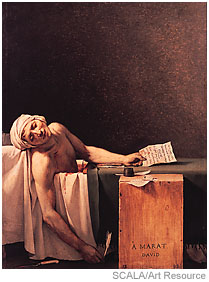

POSSIBLE DANGERS OF THE REVOLUTIONARY MISSION
|
Enlightenment from Brother von S.:
Joining a revolutionary cause is not without risk. In 1776, Captain Nathan Hale of the American Army penetrated British lines to obtain information for his cause. He was captured by the British and was immediately hanged, without trial, as an American spy. He died declaring that his only regret was that he had but one life to lose for his country. He was only 21 years of age. In France, the great revolutionary and author of Chains of Slavery (1774), Jean-Paul Marat, was lately most savagely stabbed to death in his bath by a misguided supporter of the royalty, a young woman named Charlotte Corday. |
The Death of Marat  |